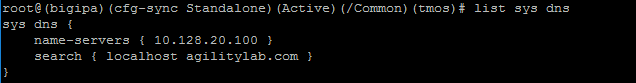
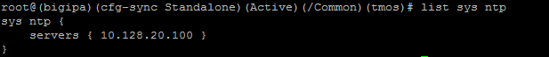
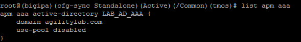

F5 Identity and Access Management Solutions > Class 8: Troubleshooting Universal Access Source | Edit on
Lab 2: APM Troubleshooting Lab Object Preparation (TMSH)¶
Note: You only need to perform one of Lab 1, 2, or 3. They accomplish the same thing only in different ways. Lab 2 gets the Lab Preparation using TMSH
The purpose of this lab is to preconfigure some objects that will be used throughout the other labs. These objects are as follows:
- Domain Name Services (DNS) Resolver
- Network Time Protocol (NTP) Server
- Access Policy (APM) AAA Server – Active Directory
- Access Policy (APM) SSO Configuration – NTLMv1
- Access Policy (APM) Access Profile
- Local Traffic (LTM) Pool and Member
- Local Traffic (LTM) Virtual Server
Connect to the Lab via SSH¶

- Establish an RDP connection to your Jump Host and double-click on the BIG-IP Chrome shortcut on the Windows desktop. - User: agility - Password: Agility1
- Ignore the certificate warning.
- Login into the BIG-IP via SSH using putty and the following credentials: - User: root - Password: default
- Log in to tmsh by typing the following command: tmsh
DNS Resolver for System Configuration (TMSH)¶
To add a name server to your /etc/resolv.conf file, use the following command syntax, replacing <IP addresses> with your IP addresses:
modify sys dns name-servers add { <IP addresses> }
To add domains to your search list use the following command replacing <domains> with the domain you wish to add:
modify sys dns search add { <domains> }
Configure as follows:
modify sys dns name-servers add { 10.128.20.100 }
modify sys dns search add { agilitylab.com }
save sys config
To verify, use the following command: list sys dns
You should see the following reply: 
{kind=link}
NTP Server for System Configuration (TMSH)¶
To configure one or more NTP servers for the BIG-IP system, use the following command syntax:
modify sys ntp servers add {hostname hostname….}
Configure as follows:
modify sys ntp servers add { 10.128.20.100 }
save sys config
To verify, use the following command:
list sys ntp
You snould see the following reply: 
{kind=link}
Access Policy (APM) AAA Server – Active Directory Object Creation (TMSH)¶
To configure an Active Directory AAA Server object, use the following command syntax:
create apm aaa active-directory <name> domain <domain-name> use-pool <disabled>
Configure as follows:
create apm aaa active-directory LAB_AD_AAA domain agilitylab.com use-pool disabled
save sys config
To verify, use the following command:
list apm aaa
You should see the following reply: 
{kind=link}
Access Policy (APM) SSO Configuration – NTLMv1 (TMSH)¶
To configure an NTLMv1 SSO profile, use the following command syntax:
create apm sso ntlmv1 <profile_name>
Configure as follows:
create apm sso ntlmv1 Agility_Lab_SSO_NTLM
save sys config
To verify, use the command:
list apm sso
Access Policy (APM) Access Profile Creation (see GUI steps)¶
Note
In order to gain familiarity with the Visual Policy Editor, please follow the GUI method of Access Policy creation: https://ua230-troubleshooting-2018-dev.readthedocs.io/en/latest/class4/module1/module1.html#access-policy-apm-access-profile-creation
Local Traffic (LTM) Pool and Member Creation (TMSH)¶
To configure a LTM Pool and Pool members, use the following command syntax:
create ltm pool <pool-name> members add { <IP-addr>:<service-port> }
Configure as follows:
create ltm pool Agility-Lab-Pool members add { 10.128.20.100:80 }
save sys config
To verify, use the following command:
list ltm pool
Local Traffic (LTM) Virtual Server Creation (TMSH)¶
To configure a virtual server, use the following command syntax:
create ltm virtual Agility-LTM-VIP { destination 10.128.10.100:443 profiles add { clientssl http Agility-Lab-Access-Profile } vlans default source-address-translation { type automap } }
Configure as follows:
create ltm virtual Agility-LTM-VIP { destination 10.128.10.100:443 profiles add { clientssl http Agility-Lab-Access-Profile } vlans default source-address-translation { type automap } }
save sys config
To verify, use the following command:
list ltm virtual